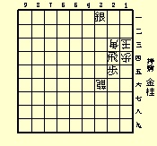
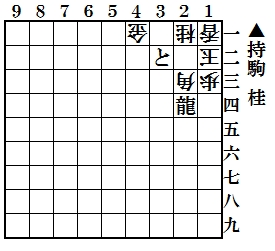
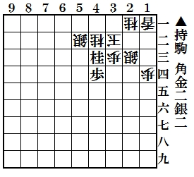
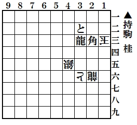
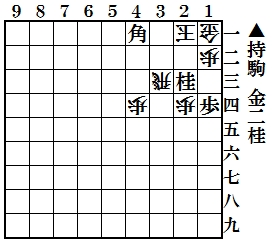

HOME（懸賞問題）前回の結果（懸賞問題）
随想コーナー
私の思うまま随想
【 お知らせ掲示板 】
・解答締切日は毎月末日
・ＨＰは毎月８日更新
・解答など発表は翌々月
投稿作品募集中
詰将棋保存会のお知らせ
年報2012年版完成
情報提供のお願い
解けうれQRコード
解けてうれしい詰将棋
投稿作問題 ５月号
問題１

【出題】登場９８回 東京都 大森 常一 様
問題２
【出題】登場９９回 東京都 大森 常一 様
問題３

【出題】登場３回 横浜市 松岡 信行 様
問題４

【出題】 登場２６回 甲斐市 門田 和雄 様
問題５

【出題】登場３０回 堺市 柴田 昭彦 様
投稿作問題 ４月号
問題１
【出題】 出題 編集部
問題２
【出題】登場３回 京都市 岩崎 柊典 様
問題３
【出題】登場１６５回 高岡市 藤井 憲郎 様
問題４
出題】 登場１６６回 高岡市 藤井 憲郎 様
問題５

【出題】 登場２４回 甲斐市 門田 和雄 様
【事務局連絡】
このコーナーの解答者数は詰将棋コーナーの約半数です。
難解ですが１問でも正解すれば当選権がありますので是非ご応募下さいませ。
ユニークなコメントを頂いた場合、選者の独断で当選確率は上がります。